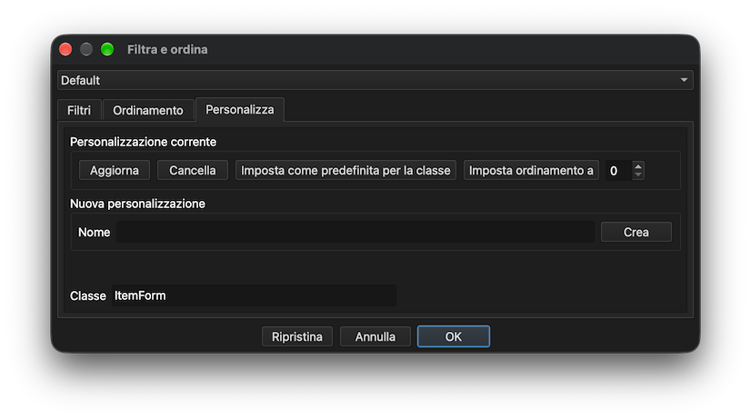

Filtra e ordina
Tramite questa finestra è possibile filtrare e ordinare i dati da presentare nelle schede.

Nella casella di selezione è possibile attivare una delle configurazioni memorizzate dei filtri ed ordinamento tra quelle disponibili.
Nell'immagine Default è la configurazione predefinita e correntemente attiva.
La finestra presenta sempre tre schede:
- Filtri: Permette di filtrare i dati da considerare nella gestione
- Ordinamento: Permette di impostare più livelli di ordinamento dei dati
- Personalizza: Permette di creare e modificare le configurazioni di filtri e ordinamento
La scheda Personalizza è visibile e disponibile solo per gli utenti che possono modificare filtri e ordinamento.

All'interno del riquadro Personalizzazione corrente sono disponibili le seguenti funzioni:
- Aggiorna: memorizza le impostazioni correnti dei filtri e ordinamento sulla personalizzazione attiva ovvero quella selezionata nella casella delle personalizzazioni disponibili
- Cancella: elimina la personalizzazione attiva
- Imposta come predefinita per la classe: tra le personalizzazioni disponibili viene proposta quella predefinita per la classe se non ci sono personalizzazioni predefinite per l'utente corrente
- Imposta ordinamento a: se ci sono più personalizzazioni disponibili vengono presentate nella lista di selezione ordinate in base al numero attribuito da questa casella
Tramite le opzioni disponibili in questa scheda è possibile creare le configurazioni dei filtri e ordinamenti. E' necessario:
- Inserire un nome in Nuova personalizzazione → Nome
- Cliccare sul tasto Nuova personalizzazione → Crea
- Il nuovo nome apparirà già selezionato nella lista delle personalizzazioni
- Apportare le impostazioni richieste sulle schede Filtri e Ordinamento
- Cliccare su Personalizzazione corrente → Aggiorna per memorizzare le impostazioni
Inizio pagina